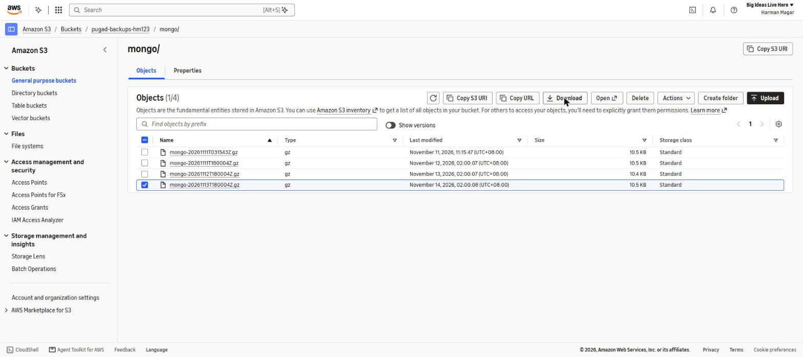
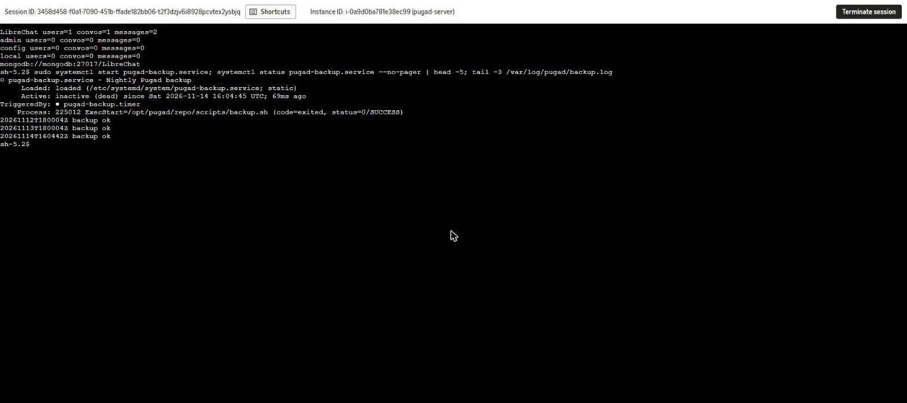

Section 6
Monitoring, backup & restore, security
Dashboard
The pugad-ops dashboard shows, on one screen: an alarm strip, questions asked, answer time, failures (failed answers and
server errors), CPU %, memory % and disk % with the alarm lines drawn in. Memory and disk come from the CloudWatch agent; questions,
answer time and failures are pulled from the nginx request log. E-06

Alarms
| Alarm | Fires when | Why it matters |
|---|---|---|
pugad-high-cpu | CPU above 85% | Server overloaded, answers slow |
pugad-memory-pressure | Memory above 90% | Containers may be killed |
pugad-disk-filling | Disk above 85% for 5 min | At 100% MongoDB stops writing |
pugad-instance-unhealthy | EC2 status check fails | Server itself is broken |
pugad-server-errors | 5xx responses in the request log | App is failing customers |
pugad-answers-failing | Chat answers failing | Model or app problem (e.g. quota) |
pugad-slow-answers | Answer time too high | Customers waiting |
pugad-backup-missing | No 'backup ok' log line in time | Nightly backup did not run |
pugad-site-down | Health check reports not OK | Site unreachable from outside (added with the Lambda) |
All alarms send email through SNS topic pugad-alerts. E-07

The real alert
During the staged disk-full fault on 14 Nov 2026 the team received a real email from pugad-disk-filling at
15:54:06 UTC with a datapoint of 87.2%. The full story is on Automation & incident. E-12aE-12b
We also triggered pugad-high-cpu with a CPU stress test and received its ALARM email. add E-08 alarm-email screenshot
Backup and restore
Every night at 18:00 UTC (02:00 Manila), a systemd timer runs scripts/backup.sh: it dumps the MongoDB database and the app
config, uploads both to the private, versioned bucket pugad-backups-hm123, and writes "backup ok" to a log CloudWatch watches. E-11aE-15b

Restore test result: PASS (on the second try)
| Attempt 1 | Attempt 2 | |
|---|---|---|
| Backup file | mongo-20261113T180004Z.gz (10.5 KB, nightly) | mongo-20261114T160442Z.gz (15.7 KB, run by hand) |
| Restored on | Laptop, throwaway mongo:8 container | same |
mongorestore | 58 restored, 0 failed | 67 restored, 0 failed |
| users / convos / messages | 0 / 0 / 0 | 1 / 1 / 2 |
| Live server at the time | 1 / 1 / 2 | 1 / 1 / 2 E-11b |
| Matches live? |
RPO (data we could lose): up to 24 hours. RTO (time to restore the database once the file is downloaded): about 5 minutes. Full steps: docs/restore-test.md.

Security: before and after
| Area | Before | After |
|---|---|---|
| Account sign-in | New account | Builder ID with MFA (TOTP) E-12 |
| Secrets | API key in a .env file | 5 secrets in SSM Parameter Store (encrypted), loaded into memory at start; .env and keys in .gitignore; gitleaks on the laptop |
| Server permissions | — | pugad-ec2-role, least privilege: read content bucket and secrets, upload-only to backups |
| Admin access | — | Session Manager from the AWS console (no SSH port open) |
| Traffic | http://localhost | HTTPS only via Caddy + Let's Encrypt |
| Network rules | Design: HTTP from CloudFront only | Now: 80/443 from anywhere (CloudFront blocked) — a known weakness |
| Sign-ups | Anyone could register | Registration closed after the team signed up |
| Storage | — | Both S3 buckets private, backups versioned |
| Audit | None | CloudTrail pugad-trail records every AWS action |
| Chatbot misuse | General chatbot | Answers only from documents; refuses prompt injection; never asks for card numbers E-14 |